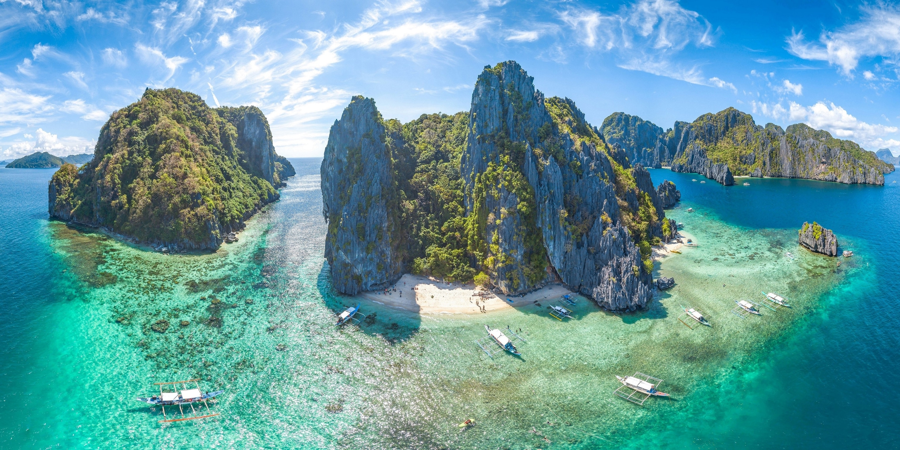
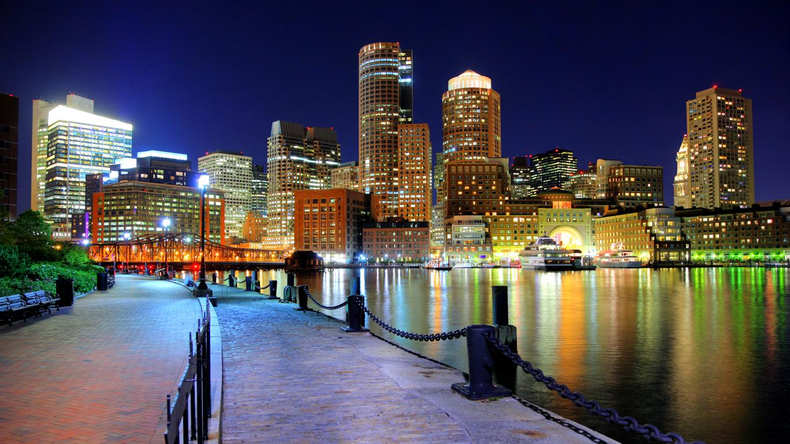

Let me tell you my journey!
Let's start from when I was born. The Philippines!
Composed of multiple islands as beautiful as this. The Filipino people are kind, gracious and will help you in any way they can whenever you need help. Of course, like any country, there are people who are living below the poverty wage. These are the people you will see living in the streets, begging for food. I think it it in our best interest to help those in need. We have been fortunate enough to live in the USA where we have enough to be able to afford all the necessities of life including those that are considered luxuries.

Welcome to my city!
We've been living here for just over 1.5 yr and we are loving it.
I especially like this photo since we take our walks on this harbor almost every day.
It is a beautiful sight to behold!
Come and check it out!